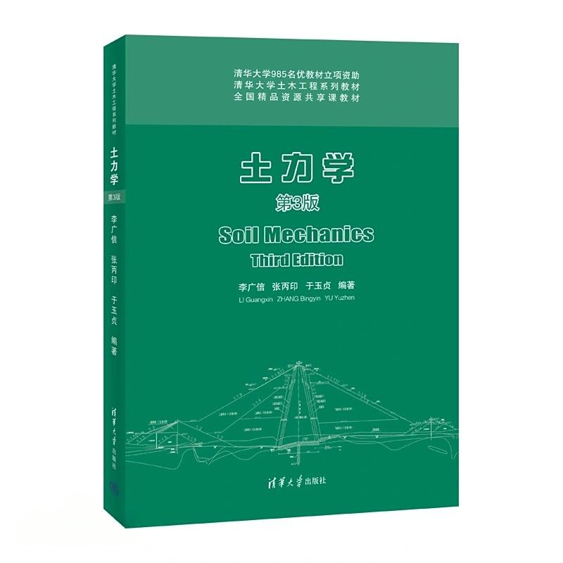

教材推荐
本课程推荐以下教材作为主要学习参考资料。这些教材涵盖了土力学的基本理论、计算方法和工程应用，是学习本课程的重要辅助材料。

《土力学》(第3版)
作者： 李广信、张丙印、于玉贞
出版社： 清华大学出版社
出版时间： 2022年8月1日
ISBN： 9787302595021
定价： 75元
内容简介：
本书是土力学领域的经典教材，系统介绍了土的物理性质、渗透性、压缩性、抗剪强度、土压力、地基承载力、地基沉降等基本理论和工程应用。第3版在保持原有风格的基础上，更新了部分内容，增加了工程案例和习题。
适用章节： 全部章节

《土力学地基基础》(第5版)
作者： 陈希哲、叶书麟
出版社： 清华大学出版社
出版时间： 2013年
ISBN： 9787302320739
内容简介：
本书全面介绍了土的物理性质、渗透性、压缩性、抗剪强度、地基应力计算、地基沉降、土压力与挡土墙、地基承载力等内容，并结合工程实例详细讲解了地基基础的设计方法。书中配有大量例题和习题，便于学习和应用。
适用章节： 第3章、第4章、第7章、第8章

《土力学原理》
作者： 赵成刚
出版社： 清华大学出版社
出版日期： 2017.08.01
定价： 48元
印次： 2-2
ISBN： 9787512133105
内容简介：
本书系统介绍了土力学的基本理论和工程应用，内容包括土的物理性质、渗透性、压缩性、抗剪强度、土压力、地基承载力等核心内容。本书注重理论与实践相结合，通过工程实例帮助读者理解和应用土力学知识。
适用章节： 第3章、第5章、第6章、第7章
推荐阅读资料
参考书籍
- 《土工试验规程》(SL 237-1999) - 中华人民共和国水利部
- 《建筑地基基础设计规范》(GB 50007-2011) - 中华人民共和国住房和城乡建设部
- 《土力学》(第2版) - 沈珠江、周健 - 高等教育出版社
- 《土力学与地基基础》 - 钱德玲 - 高等教育出版社